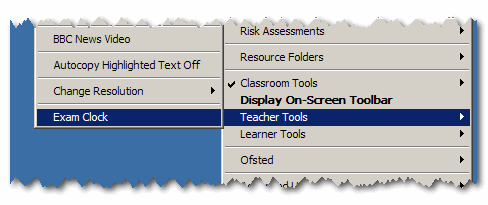
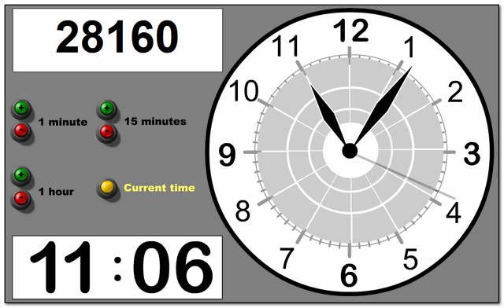
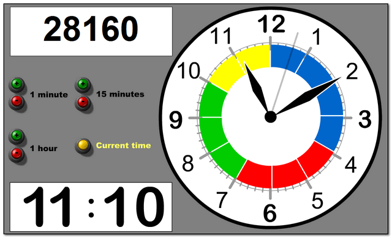
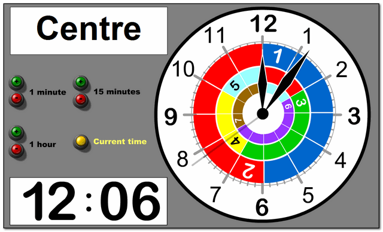
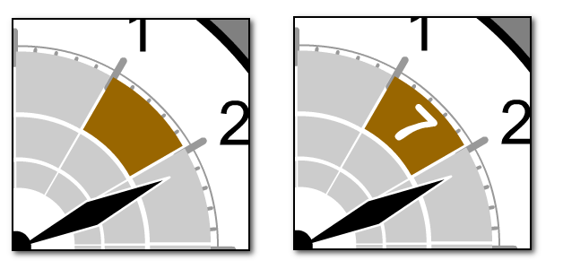
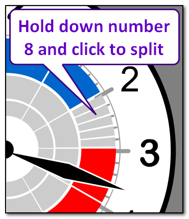
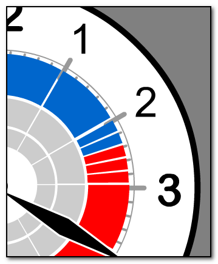

Exam Clock
An exam clock that can be displayed on the classroom whiteboard to help students develop time-management skills ready for important tests:

It allows you to display the exam centre number (top left), and adjust the displayed time to simplify time-calculations:

You can also colour each 5-minute section to illustrate the appropriate amount of time that should be devoted to each part of the exam (a single click removes the sections to keep the display simple):

For more complicated exams, you can use multiple rings and add numbers to the sections by holding down the space-bar as you click (cycle through) the sections:

Top tip:
Instead of cycling through all the colours, holding down a number when clicking will take you directly to that segment, for example holding down the number 7 alternates between these two displays:

If you hold down the number 8, it will split the 5-minute section into 1-minute sections:

You can now colour each of the 1-minute sections in the normal way:

Holding down the number 8 and clicking will return the block to a 5-minute section.